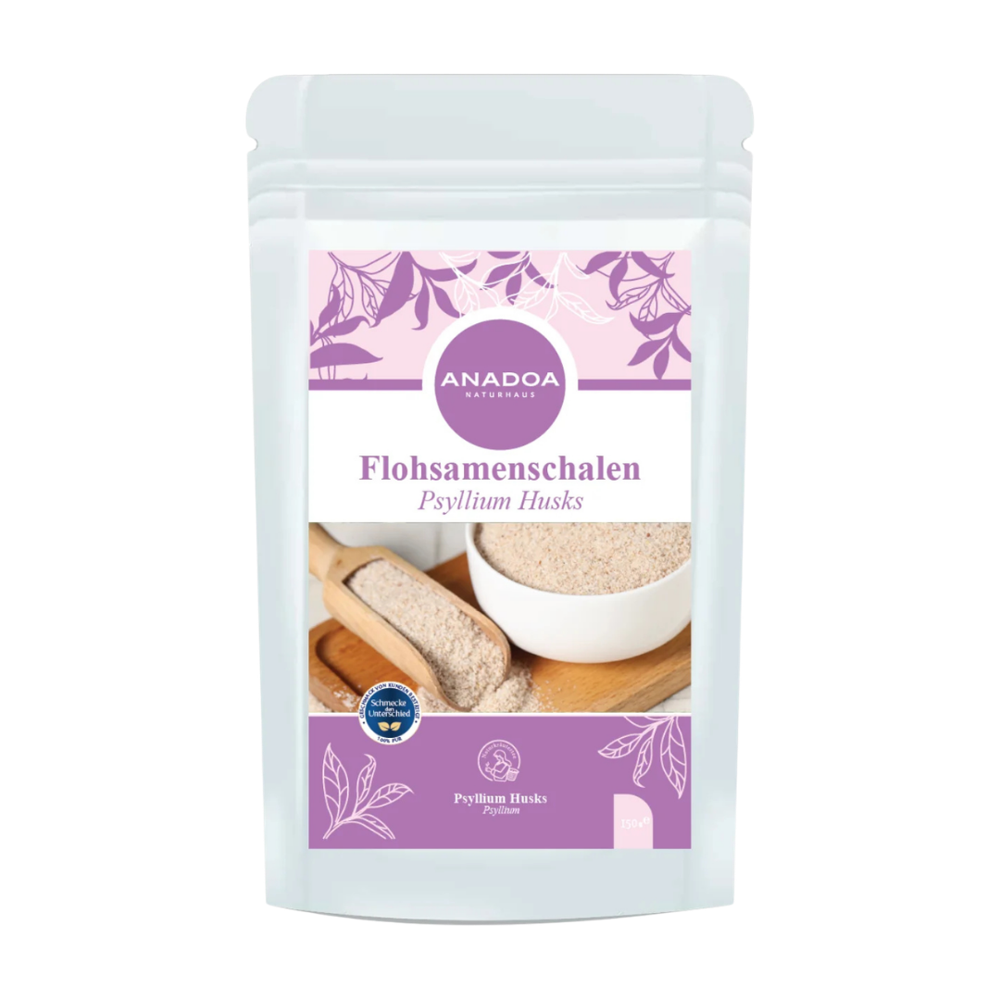

Flohsamenschalen (Karnıyarık Tozu) – Das Geheimnis der Pflanze Plantago ovata
Hinter dem etwas kuriosen deutschen Namen "Flohsamen" (aufgrund des Aussehens der winzigen Samen) verbirgt sich die Pflanze Plantago ovata, eine Wegerich-Art, die vor allem in Indien und Teilen des Nahen Ostens kultiviert wird. In der Türkei ist das Pulver unter dem Namen "Karnıyarık Tozu" (Psyllium Husk) zu einem absoluten Superstar der ganzheitlichen Gesundheitsvorsorge avanciert.
Der entscheidende Faktor dieser Pflanze ist nicht der Kern des Samens, sondern seine äußere Schale (Husk). Diese hauchdünnen Schalen bestehen fast vollständig aus extrem löslichen, schleimbildenden Ballaststoffen. Das Premium-Pulver von Anadoa Naturhaus wird in einem hochmodernen Kaltmahlverfahren hergestellt, bei dem die reinen Schalen schonend vom Kern getrennt und zu einem extra feinen Pulver vermahlen werden. Dies garantiert eine maximale Quellfähigkeit, die weit über der von ganzen Samen liegt.
Regulierung der Verdauung - Sanft und natürlich dank Flohsamenschalen
Die moderne, westliche Ernährung leidet unter einem massiven Mangel an Ballaststoffen, was oft zu chronischer Verstopfung, Trägheit und einem geschwächten Mikrobiom führt. Flohsamenschalenpulver ist ein Quellstoff der Superlative. Wenn das Pulver mit Flüssigkeit in Berührung kommt, kann es mehr als das 50-fache seines eigenen Volumens an Wasser binden.
Im Magen-Darm-Trakt bildet dieses Pulver ein weiches, gelartiges Gleitmittel. Es vergrößert sanft das Stuhlvolumen, was die Darmwand dehnt und den natürlichen Entleerungsreflex (Peristaltik) stimuliert. Im Gegensatz zu aggressiven, chemischen Abführmitteln (Laxantien), die den Darm reizen und abhängig machen, wirken Flohsamenschalen absolut mechanisch und schonend. Faszinierenderweise wirken sie regulierend in beide Richtungen: Sie weichen harten Stuhl bei Verstopfung auf und binden gleichzeitig überschüssiges Wasser bei Durchfall.
Flohsamenschalen als "Besen" für eine saubere Darmschleimhaut
Neben der reinen Transportfunktion übernimmt das gelartige Flohsamenschalen-Netzwerk die Aufgabe eines sanften Schwamms oder "Besens". Während die geleeartige Masse langsam durch die meterlangen Darmschlingen gleitet, nimmt sie an den Darmzotten abgelagerte Stoffwechselabfälle, Fäulnisgifte und Toxine auf und bindet sie sicher in sich ein, bis sie ausgeschieden werden.
Aus diesem Grund sind Flohsamenschalen (oft in Kombination mit probiotischen Kulturen oder Heilerde) der absolute Hauptbestandteil jeder professionellen Fasten- oder Darmsanierungskur, um die Selbstreinigungskräfte des Darmsystems massiv zu unterstützen und chronische Entzündungsprozesse im Darm zu beruhigen.
Stabilisierung von Blutzucker und Sättigung dank Flohsamenschalen
Der extreme Quelleffekt hat weitreichende positive Folgen für den gesamten Stoffwechsel. Wenn Flohsamenschalenpulver etwa 30 Minuten vor einer Mahlzeit eingenommen wird, füllt das entstehende Gel den Magen teilweise aus, was zu einem langanhaltenden, mechanischen Sättigungsgefühl führt – ein genialer Trick zur Unterstützung beim gesunden Abnehmen ohne Heißhunger.
Zudem legt sich das Gel schützend über den Speisebrei im Dünndarm und verlangsamt die Aufnahme von Kohlenhydraten und Glukose in das Blut drastisch. Dies verhindert aggressive Blutzuckerspitzen nach dem Essen (die Hauptursache für Müdigkeit nach dem Mittagessen) und sorgt für eine sehr konstante, ruhige Insulinantwort des Körpers.
Die ideale Zubereitung und Anwendung von Flohsamenschalen
Flohsamenschalenpulver ist kein Nahrungsmittel, das man trocken essen darf. Die absolute Grundregel lautet: Viel trinken!
Die richtige Einnahme: Geben Sie 1 leicht gehäuften Teelöffel des Pulvers in ein großes Glas (ca. 300ml) lauwarmes Wasser oder ungesüßten Saft. Rühren Sie zügig um und trinken Sie das Gemisch sofort, noch bevor es im Glas andickt. Trinken Sie danach zwingend noch ein weiteres, großes Glas Wasser hinterher. Im Laufe des Tages sollten Sie insgesamt mindestens 2 bis 3 Liter Flüssigkeit zu sich nehmen, da das Pulver dem Darm sonst Wasser entziehen und paradoxerweise eine Verstopfung verursachen könnte. Alternativ eignet es sich fantastisch als glutenfreies Bindemittel beim Backen (z.B. für Keto-Brote) oder zur Verdickung von Smoothies.
Warum der Flohsamenschalen von Anadoa die beste Wahl ist
Die Qualität von Flohsamenschalen definiert sich über den Reinheitsgrad (Purity). Billige Produkte enthalten oft noch zu große Anteile des Samenkerns, die nicht quellen, oder sind stark mit Schwermetallen belastet.
Unser Anadoa Flohsamenschalenpulver besitzt einen extrem hohen Reinheitsgrad von über 99 % reinen Schalen (Husk). Durch unsere hochfeine Pulverisierung (Micro-Grinding) erreichen wir eine maximale, klumpfreie Quellfähigkeit, die eine schnelle und effektive Gelbildung im Magen garantiert. Es ist absolut frei von Gluten, künstlichen Zusätzen und Zucker.
Häufig gestellte Fragen (FAQ)
Wie schmeckt
das Flohsamenschalenpulver?
Es ist nahezu geschmacksneutral und geruchslos. Im Wasser verrührt hat es im Mund eine leicht gelartige, sämige Textur, die jedoch nicht unangenehm ist.
Wann ist der
beste Zeitpunkt für die Einnahme?
Wenn Sie die Sättigung unterstützen und den Blutzucker regulieren wollen, ist die Einnahme ca. 30 Minuten vor den Hauptmahlzeiten ideal. Zur reinen Verdauungsförderung können Sie es morgens auf nüchternen Magen oder abends vor dem Schlafen (mit extrem viel Wasser!) einnehmen.
Hilft das
Pulver auch bei Durchfall (Diarrhö)?
Ja, interessanterweise wirkt es adaptogen. Bei Durchfall absorbiert die extreme Quellfähigkeit der Schalen die überschüssige Flüssigkeit im Darm, dickt den Stuhl ein und beruhigt die gereizte Darmschleimhaut.
Gibt es
Wechselwirkungen mit Medikamenten?
Achtung: Ja! Da Flohsamenschalen eine schützende Gelschicht im Darm bilden, können sie die Aufnahme von Medikamenten (besonders von Schilddrüsenhormonen oder Herzmedikamenten) verzögern. Zwischen der Einnahme des Pulvers und Medikamenten müssen zwingend 1 bis 2 Stunden Abstand liegen.
Warum darf
ich das Pulver nicht trocken schlucken?
Lebensgefahr: Trocken geschlucktes Pulver beginnt sofort im Rachen oder in der Speiseröhre durch den Speichel aufzuquellen, was zu einem lebensgefährlichen Erstickungsanfall oder Darmverschluss führen kann. Es MUSS immer stark in Flüssigkeit verrührt getrunken werden.